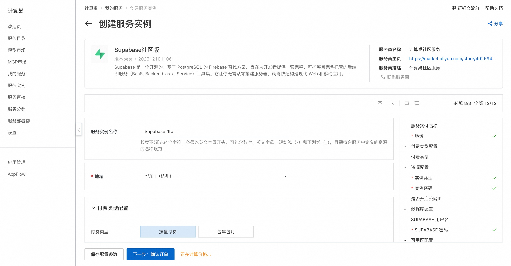
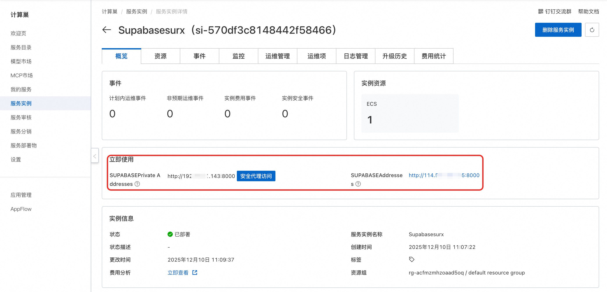
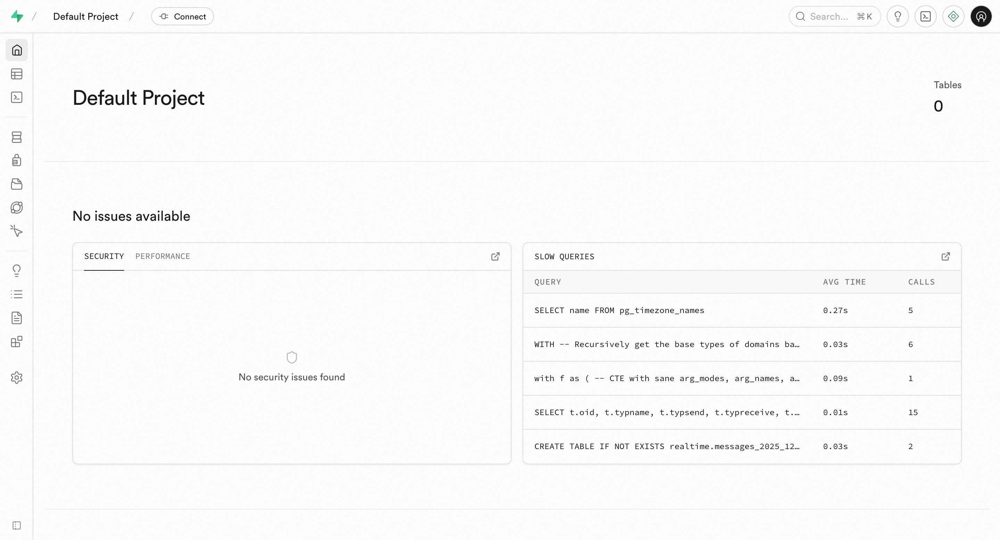

🌟 服务简介
💥 无需 DevOps，30 秒拥有自己的 Firebase 替代品！
Supabase 不只是开源 BaaS——它是你全栈开发的加速引擎，内置实时数据库、身份认证、存储、Edge Functions 和 REST/GraphQL API，一行 SQL 自动生成完整后端。从此告别繁琐配置，专注产品创新！
Supabase 社区版是一个开源的后端即服务（BaaS）平台，专为开发者打造。通过集成 PostgreSQL、Realtime、Auth 和 Storage 等核心模块，Supabase 能够自动为你的数据表生成类型安全的 API，支持实时订阅、用户认证、文件存储和边缘函数，显著提升全栈开发效率与系统可靠性。
🚀 部署流程
⚡ 5 分钟极速上线，无需配置，开箱即用！
借助阿里云计算巢，一键部署 Supabase 社区版，省去环境搭建烦恼，专注核心开发！
-
访问计算巢 Supabase 社区版 部署链接，按页面提示填写部署参数：
 -
参数配置完成后，系统将自动生成费用预估明细。确认资源配置无误后，点击 下一步：确认订单。
-
在订单确认页，确认后点击 立即创建 开始部署。
-
部署完成后，通过控制台获取访问地址。
 -
访问服务。 
📚 使用指南
使用请参考 Supabase 官方文档 了解完整功能与 SDK 用法。
© 2009-2022 Aliyun.com 版权所有